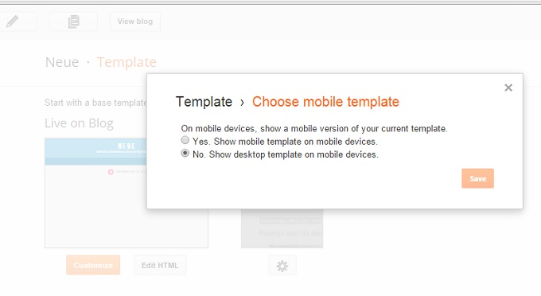

Getting Started
Neue is a modern and responsive Blogger template for people with the requirement of speed, simplicity and meaningful design. This is our first Blogger template based on the new design principle by Google called "Material Design". You can see the touch of Material design in Neue Template's ripple effect on clicking a button or the subtle animations on different elements.
Live Preview
The template requires very less effort to get started with. With Neue we have automated most of customizations to fit with your blog, but there are a few things you have to do yourself and have to touch the code. This doc will guide you through it.
Uploading the Template
The first step to get started with your template is to upload it to your blog and the following instructions will guide you through it.
Back Up your Template First
Backing up your current template is a good idea in case you need it later if you change your mind. Refer to the following guide to learn how to backup-up your template.
Uploading the XML file
In the folder you have downloaded, you will find a file named Neue-Template-v1.xml, it's the template file you need to upload
Go to your Blog Dashboard > Template > Click on the Backup/Restore button on the top right corner and upload the .xml file there.
Editing Navigation Links
To change the navigation links, go to your Blogger Dashboard > Template > Edit HTML > Now use CTRL+F and search for the following piece of code.
<!-- Navigation Bar -->
< class='navigation' id='navbar_links'>
[...]
</nav>
Making the Changes
You will have to edit the HTML of the navigation bar links to make it point to the pages you want it to. It requires editing codes, so make sure you have a backup template.
Find the following piece of code inside the HTML markup we searched for in the last step
<ul class='nav-bar-link'>
<li>
<a href='/'><span>Home</span></a>
</li>
<li>
<a href='#pageLink'><span>About</span></a>
</li>
<li>
<a href='#pageLink'><span>Photos</span></a>
</li>
<li>
<a href='#pageLink'><span>Another Page</span></a>
</li>
</ul>
The above code is the markup for the links and dropdown links inside the navigation bar. Let me explain it so you can make changes.
Explaining the Markup
The first (1) and the last (17) line of the code is the opening and closing tags, it is an ul element which stands of Unordered List, and each <li> [...] </li> is an item which contains a link to some page in the navbar.
The 2nd Line <li> is a list item and it contains on line 3 <a href='/'><span>Home</span></a> which is the markup for the link to go when someone clicks that link.
Add or Remove A Link
Each link in the code is something like following code:
<li><a href='#pageLink'><span>Home</span></a></li>
This would output into a link that points to #href with the text Home, you have to replace this with your page's link so when the user clicks on it they are taken to the page.
Say I want a link "Concerts" to go to a link http://myblog.blogspot.com/p/concerts.html, we would need something like this.
<li><a href='http://myblog.blogspot.com/p/concerts.html'>Concerts</a></li>
Change each links that way, replace the text and insert the link inside href=''.
Remove the lines you don't want or add lines if you want to add more links.
Change Color Scheme (Premium only)
The colors are the heart of any design. Especially with the Material Design concept you don't want to be stuck with one single default color scheme for your blog.
Changing the primary, secondary and default dark color is very easy to meet the requirements for your blog, by default it is primary, secondary and dark
From The Template Designer
Go to your Blogger Dashboard and then Template > Customize > Advanced > Color Scheme, now use the color picker to change the colors as per your requirement.
Easy! See you don't have to touch a piece of code to do this unlike other blogger templates.
Note: You can change the main colors, still you will be able to change the colors of header and other parts of the blog separately.
Changing Backgrounds
We have provided options to change backgrounds colors too! You can change the Background colors of main body, header and the footer.
Body Background
Go to Blogger > Template > Customize > Advanced > Page:
Change the body background color as you need.
Header Background (Premium Only)
Go to Blogger > Template > Customize > Advanced > Blog Title:
Customize the background color of the header.
Other Customizations
There are more customizations you can make to the Neue template in the Template Designer. Go to the Template Designer and change whatever you like: Post Title, Page's font, Colors and more.
Link Colors
You might want to change the links color when you change the color scheme so do take a look at it to adjust the colors to look best. All the options are available in Template Designer at Template > Customize > Advanced
Fonts
You can choose fonts for most of the major and important parts of the blog using the Template Designer. Look in for options in the Template Designer under Advance section.
Want more?
For even deeper customization for example say you want to change the border radius of author's image, or padding of the post body, these are just to name a few. To make these advanced customization Template Designer wouldn't come handy, you will have to directly make the changes from the CSS code.
How to make Videos Responsive in Post
If you are posting videos from YouTube, Vimeo etc. on your blog using their share embed code you might want make them responsive so that it appears well in mobile and smaller screen sizes.
We use the jQuery FitVid plugin to make videos responsive. We don't apply this on the videos automatically as there are times you don't want a video to size down or up according to the screen size so we left it on you.
How to do it
The setup is basic, first get your embed code from the video streaming service like YouTube, Vimeo, Dailymotion etc. For e.g we have this code from video website:
<iframe allowfullscreen="" frameborder="0" src="https://www.youtube.com/embed/QH2-TGUlwu4"></iframe>
Your code might be slightly different but you can see the similarities.
Now you just have to wrap a new code around it so it looks like this. The key is class="fit":
<div class="fit">
<iframe allowfullscreen="" frameborder="0" src="https://www.youtube.com/embed/QH2-TGUlwu4"></iframe>
</div>
Now that video will be responsive and will appear in viewport on every screen size.
Problems
Nothing is perfect, thus this template has some flaws too but I bet that's not going to be problematic much, they are just some little limitations.
Can't change Auto summary to full Post
You can't change the small post summary on index pages to display full posts. Where this might have been an option we think that post summary on Homepages and index pages are much better as it speeds up the blog and that results in more pageviews and better rank.
Responsive Design Doesn't Show Up on Mobile Devices
Do remember that you have to turn off mobile template on your blog so that it loads the Neue Template and not the mobile version of Blogger's default template.

And save it.